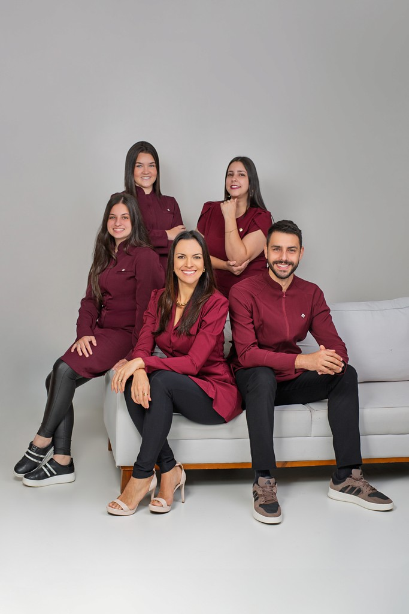
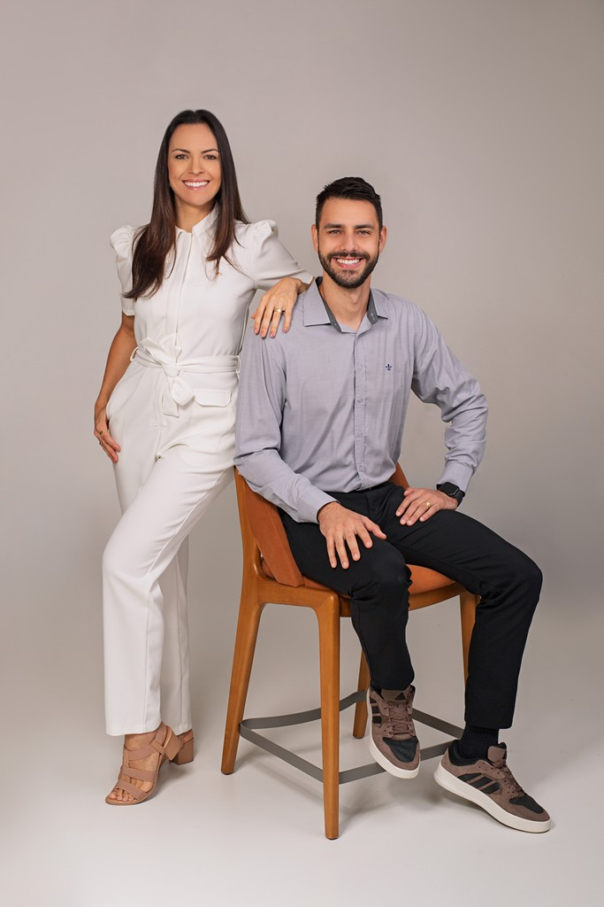

Braço do Trombudo
WF Odontologia
Clínica geral, estética, implantes, ortodontia e as demais especialidades. Você faz o tratamento inteiro com a mesma equipe, em Braço do Trombudo ou Rio do Sul.


Somos dentistas e atendemos todas as especialidades da odontologia em Braço do Trombudo e Rio do Sul. Juntos, temos mestrado, doutorado e mais de três pós-graduações.
Atendemos todas as áreas da odontologia, então você não precisa trocar de clínica no meio do tratamento. Se o seu caso não estiver na lista, pergunte pelo WhatsApp.
Consultas de rotina, limpeza e restaurações.
Clareamento, facetas e lentes de contato.
Reposição de um ou mais dentes, incluindo prótese protocolo.
Aparelho fixo e alinhadores transparentes.
Tratamento de canal, para tentar manter o dente natural.
Tratamento da gengiva e gengivoplastia.
Coroas, pontes e próteses removíveis.
Atendimento para crianças.
Nota 5,0 em 91 avaliações no Google, na unidade de Braço do Trombudo.
Fiz minha gengivoplastia com a Dra. Fernanda e fiquei extremamente satisfeita com o resultado! O procedimento ficou impecável, superou minhas expectativas. Valeu muito a pena sair de Joinville até Braço do Trombudo para realizar esse procedimento! Atendimento maravilhoso, muito profissionalismo e cuidado em cada detalhe. Recomendo de olhos fechados
Fui atendida pela Dra. Fernanda e só tenho elogios! Uma profissional extremamente atenciosa, humana e dedicada. Desde o primeiro momento demonstrou muito cuidado, paciência e carinho no atendimento, passando segurança e confiança. Além de muito competente, explica tudo com clareza e trata cada pessoa com respeito e empatia. Dá pra perceber o quanto ama o que faz. Excelente profissional, diferenciada no atendimento e no cuidado com seus pacientes.
Só tenho gratidão por esse consultório fui extremamente bem atendida,desde a recepção até o final,todos são atenciosos e ótimos profissionais,a Dra.Fernanda e o Dr.Wagner são impecáveis,cuidadosos e sempre dispostos a explicar cada etapa do tratamento,me senti segura durante todo o processo.
O resultado final ficou maravilhoso,superou minhas expectativas e elevou muito minha autoestima.Sou muito grata por tudo e recomendo de coração para quem busca não só bons dentistas,mas um atendimento humano e de confiança.💖
Mande uma mensagem pelo WhatsApp para a unidade mais perto de você.
Na primeira consulta, conversamos sobre o seu histórico e fazemos o exame clínico.
Você recebe o plano de tratamento com as etapas, o prazo e o valor.
Depois do tratamento, marcamos revisões periódicas.
Em Rio do Sul, atendemos na Clínica Schünemann. O agendamento das duas unidades é feito pelo WhatsApp.
WF Odontologia
Clínica Schünemann
Se a sua dúvida não estiver aqui, pergunte pelo WhatsApp.
Toque em “Agendar consulta”, escolha a unidade e mande uma mensagem pelo WhatsApp. A equipe responde com os horários disponíveis.
Conversamos sobre o seu histórico e o motivo da visita e fazemos o exame clínico. Se for preciso, pedimos radiografias. No fim, você sabe o que precisa ser feito.
Depende do que precisa ser feito. O valor é passado depois da avaliação, junto com as formas de pagamento.
A que for mais perto de você. Se quiser confirmar se um tratamento é feito na unidade, pergunte pelo WhatsApp.
Escolha a unidade e fale com a gente pelo WhatsApp.
(47) 99998-1676 · (47) 3525-1648